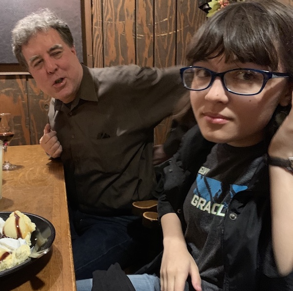
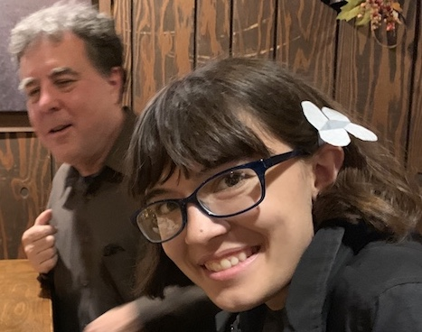
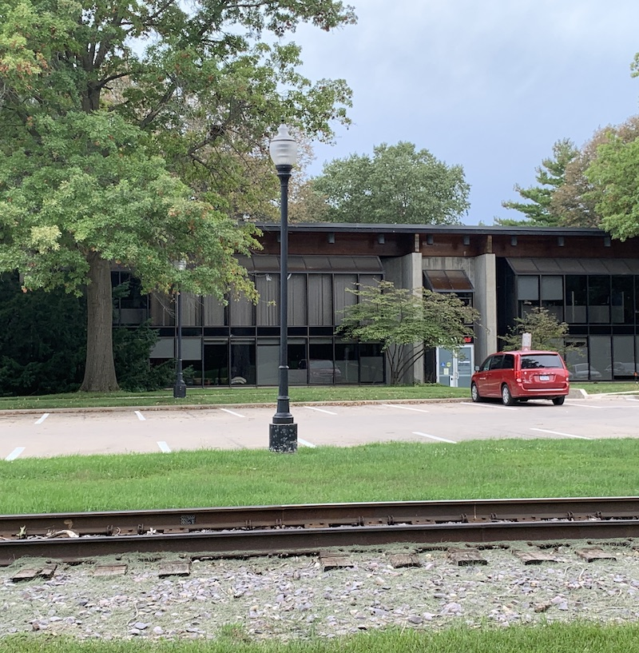
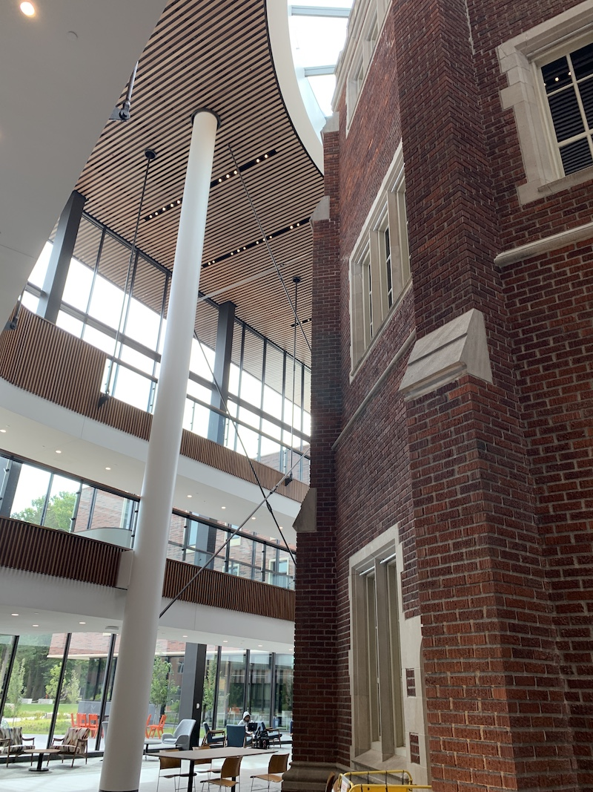
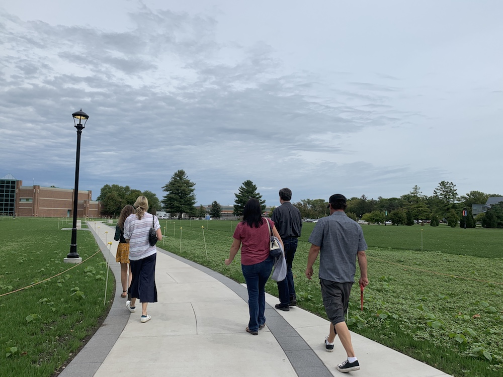

On September 13th my daughter, my wife, and I flew from the Twin Cities to Des Moines to take my daughter (I'll call her C) on a college visit to Grinnell College in Grinnell, Iowa. This would be an interesting visit, because I graduated from Grinnell in 1982, and then worked there for two years, and have been back to campus numerous times to give talks and go to reunion. Our "blink" was that Grinnell might not be a great fit for C, but she was game to check it out. I have friends there: Some with whom I went to college, others who are from the younger generation of faculty (i.e., people my own age). I'll say a word or two about C's experience, and will also reflect on the differences between Grinnell then and Grinnell now.
But first we got in our rental car and drove to Montour, Iowa, to have dinner at Rube's Steakhouse, where you grill your own steak. We visited with my friends Harriett and Jeff who after living elsewhere in the country settled in Grinnell. They have a lovely life, and it was great to catch up but also to learn a bit about their daughter's college choice--she went to Smith College. What I remember about the conversation was that their daughter just felt the vibe. This seems to be the most real thing about picking a college: something just grabs you. Honestly, picking a college is the United States' version of the "sorting hat" in Harry Potter, am I right?
The steak was great, but without my meat thermometer I overcooked a bit.   My theory of Rube's is that because the lighting on the grill is so dark people tend to cook it more rare than they would usually . . . and that's why they like their steak so much! But this time I foiled my own theory.
Then we drove on to Grinnell and stayed at the new Hotel Grinnell, which is in the building that was formerly the junior high, and long ago the high school. We had a big room with two beds. The place was pretty funky: Our room had a photo of a stack of 80s-era albums in the bathroom, and there was the predictable (the first album by the English Beat), and the -- really? -- whut? ("Too Drunk to F---" by the Dead Kennedys.)
I'd share some photos but it would seem that I took only one picture while I was in Grinnell. Hmm. I guess I was so involved in the moment taking pictures with my mind that I neglected to take pictures with my phone. I grabbed some from my wife's phone.
Friday, September 13, showed a really big harvest moon, which we noticed on our drive from Montour to Grinnell. C and I decided to walk up to campus to see it and also check out the campus at night when it's especially pretty. Grinnell has done a good job of situating buildings so that they have a nice glow when it's dark. There are now about four key nighttime visual beacons. First there is the Forum, which in my day was the student center. It's a glass, wood, and metal modernist structure designed by Walter Netsch (who is famous for the Air Force Academy building in Colorado Springs).  Netsch also designed Burling Library and the Arts building. I read in an old piece of his (that I have unsuccessfully strived to find online) that the rooflines of the Forum, Library, and Theater were designed to align horizontally. You can still see that, but unfortunately the library was defaced in the 1980s by a grotesque popup on the top to provide for extra stacks. In any case, C could see the visual harmony across these buildings. Then we walked over to South Campus. Grinnell's dormitories are small but connected via loggias into three campuses, South, North, and East. This creates a really appealing view with lights glowing out of the loggias. The third visual beacon is the Joe Rosenfield Center (JRC), which is the new (since 2007) student center. It's a multi-use building that contains the single dining hall. (In my day, there were two places to eat: Quad, which still stands on South Campus and would fit right in at Hogwarts, and the more utilitarian Cowles on North Campus. When I was a student I liked the choice, but now after many campus visits, I see that many colleges are coalescing their dining experiences into one larger hall in order to facilitate a common experience.) The JRC had people coming in and going out and seemed warm and inviting. The last visual beacon I want to pick out is the brand new Humanities and Social Studies Center (popularly now known as the HSSC, pronounced "husk").  It's quite a behemoth, and partially encloses the old Alumni Recitation Hall (ARH). A lot of alumni were pretty worried about this construction. It's huge and transformative. It is so big that it closes off the central campus and eliminates the view from there to the north. However, I'd count it as a total success. The main thing that is does is increase the coziness and warmth of the central campus. It makes that core feel even more "safe" (a theme to which I will return).
C felt the warmth: It's a very "managed" space with everything conveniently within walking distance. Now that I've visited a lot of campuses where things seem a little too spread out (Middlebury; Amherst; etc.) I think Grinnell has something pretty neat. The college owns a lot of acres but they have situated the core buildings elegantly.
The next day we had the info session, tour, and then C had an interview. 
One of the things I've discovered in all of these campus visits is that the top tier of small liberal arts colleges all have pretty much the same core elements: a great faculty, fantastic resources, and an inviting student culture: so the visit tends to turn on the little differences (sometimes not so little). Here are a few things about Grinnell that stood out in the visit:
Grinnell College is in the middle of Iowa, in the town of Grinnell (pop. 9,000, not including the students). This is apparently perceived by some as "remote" so the college has to address it in various ways. (Honestly, it's no more remote from larger urban areas than, say, Middlebury, which doesn't seem to get this critique). It's about a one hour drive from Des Moines (to the west) or Iowa City (to the east). Like a lot of high-performing small colleges, Grinnell attracts students from all over the world, and is not shy telling that story. Most Grinnell students do at least a semester abroad. So, yeah, the college is in Iowa, but it is very much "of the world" as well. I'd say the college is entirely successful promoting its international character; yet they have to be careful not to sound apologetic for being in the cornfields.
Meanwhile, the college promotes its Center for Prairie Studies. Some years ago in 2013-2014, Grinnell engaged what was then known as Crane Meta Marketing to provide some insights on the college's identity.1 I read a lot of their research and like all consultancies, they produced a feeling of anxiety by identifying paradoxes about the college; they presented a couple of "solutions" to these paradoxes. I think one was the idea of centering Grinnell's image on the idea of the prairie. But here's the thing. Yes, there is history around the prairie and there is some nearby restored prairie, but you know what? Grinnell's farming country. Really. I don't think the college has every truly taken that to heart as a component of the college identity (you could probably argue that it's been in [intentional?] denial about that since founding). I learned in George Drake's book on Joe Rosenfield that for many years until the 1940s a chief source of income for the college was from local farms it owned (p. 162). But despite the geographical location, there is no Farm Studies Concentration on campus. I would guess a name like "Farm Studies" would be too pedestrian for a national elite college,2 but it would certainly respect the surrounding reality and given the lively Iowa interest in artisanal produce, it would be hip. (Though see this nice piece.) Iowa is also among the "whitest" states in the USA: The curriculum has many courses that critique whiteness and/or study other populations in the spirit of area studies, languages, or arts, but there's no "Midwest Studies" to my knowledge (when I was a student, then professor Liahna Babener taught a course on the literature and culture of the American midwest but I don't think it really had a slot in the course list the way, say, English Literature did). Yet Iowa is not as uniform as its image: Waterloo, Iowa, is more than 15% African American. Projections suggest that Iowa will decrease from something like 90% white-non-Hispanic to about 75% by 2050, so there's a lot to think about. Maybe "Iowa Studies"? Joseph Wall, a key Grinnell College history professor, wrote a standard brief history of Iowa; maybe that's the way to incorporate a scholarly involvement with "place." My point is simply that there's something for the college to examine in the ongoing transformation of Iowa. The college does strongly emphasize the town of Grinnell. There are some who are going to argue that, yes, the college does a lot with the nearby area and the local ethnic patterns and folkways; I'm just saying that the emphasis on "place" isn't as profound as you see in the "sell" you get from institutions like Bates (strongly argues for the college's relationship to the class structure of Lewiston/Auburn and to the local francophone communities) or Middlebury (which wears its Vermontness like a pair of overalls).
Now that I've seen a lot of campuses, I have to say that the resources in the sciences are truly amazing. It seems that most if not all science faculty have their own lab or space that is dedicated to research, and, critically, research with undergraduate collaboration. The Noyce Science Building is quite utilitarian but I like that -- it looks like a place where real science happens. The embedded Science Library has a lot of windows overlooking the JRC: It's a pleasant place to study on a cold winter night.
The new HSSC is astounding. It has not only more space for the humanities and social sciences, but it seems designed as a sort of agora for the free flow of ideas, with whiteboards everywhere and what looks like an outdoor classroom. The building has a lot of network connectivity and the college now has even more opportunities for real-time video classroom sharing with other institutions.
So those are just some differentiators. The tour was great, clear, and non-braggy. For C, Grinnell seemed a little "light" on college traditions and customs, with which she is fascinated. After the tour and interview, C placed Grinnell in the "plausible" category for application. For her, it didn't make the grade as a potential early decision commitment, but it's viable for the regular round of applications.
How is Grinnell different in 2019 from what I experienced in the 1980s? When I entered Grinnell in 1978, there was still a remnant of hippie culture. In central Iowa, I think the cultural movement of the coastal "sixties" was delayed by maybe three years (even though the Jefferson Airplane played Grinnell in 1966), and lingered by that much as well. So students who were about to graduate in 1979 would have started in 1975, and would have overlapped with the tail end of the sixties kids -- among them, young men who were still subject to the draft (which ended in 1973). So there was in my day the circumambient smell of pot and I would say that the campus was pretty laid back, with a student-called "skip day" and a "Grinnell Relays" which was a parody of the Drake Relays. There was in 1978 a new law raising the drinking age to 19, but many students admitted in 1978 were grandfathered in to be allowed to drink at 18. I think this younger drinking age actually de-emphasized the role of alcohol on campus. As the years proceeded and alcohol became illegal for more students, it became more of a forbidden fruit, and I believe the preferred inebriant on campus switched from pot to beer. Meanwhile in 1980 Reagan was elected, and I swear to you that the college culture became a little more straight; some incoming students seemed a bit more free to show their relative wealth. George Drake became President of the college in 1979, and he revived the idea of athletics as a key component of the college experience. Then in the mid-1980s Grinnell students, as on a lot of campuses, organized to promote divestment of college funds from companies doing business in South Africa. My point is simply that it was a complicated time, but, essentially, laid back enough that students didn't feel a lot of pressure to excel in any conventional way. Additionally, my guess is that Grinnell was an oddball compared to the schools it compared itself to back then: Its (apparent) isolation made it a place that could just do its thing. There were fewer articles like this trying to compare and contrast.
Today: I think Grinnell has evolved into a school where academics and academic achievement really are at the center of the experience. Grinnell seems not quite a "grind" school (as I think may be the case at Carleton), but it is certainly a college where everything is intentional. In my time, Grinnell was more haphazard . . . less professional . . . more bespoke . . . more weird. Is Grinnell now really that different from its peer institutions these days? I'm not so sure (more about this in a later blog post).
Oh yeah, I promised to say something about the feeling of "safety" at Grinnell. A few years ago I was talking to someone at Reunion and we were comparing notes about coming to Grinnell. Her parents had been going through a divorce. (Mine, too.) She was from the Twin Cities, and didn't really enjoy the bustle of the city. (Me, too.) So when she visited Grinnell in its carefully-placed setting, she immediately felt "safe." This was a big deal for me as well: A jewel of the prairie where I could study what I wanted, be what I wanted, become what I wanted, and grow and thrive. It was a great thing.
Endnotes
1. N.b., these kinds of branding exercises in higher education really bugs me: they are corporatist, and the very notion that colleges have to hire outsiders to tell them who they are seems pretty sad.
2. Grinnell is an important player in the town, but it's interesting to me that some colleges with a national reputation don't participate in local events. For instance, Macalester College never has a booth at the Minnesota State Fair or, say, at the Selby Jazz Festival, while other Minnesota-/Twin Cities-based institutions do.
comments powered by Disqus